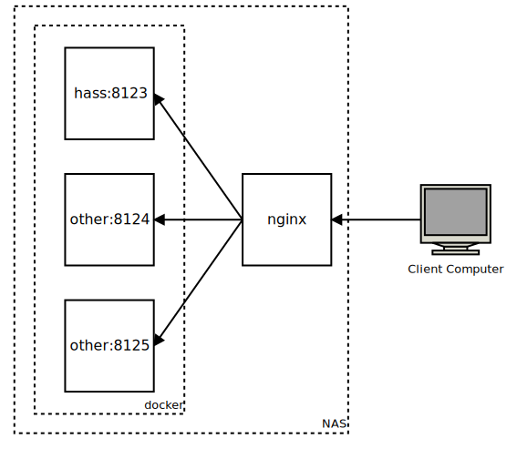
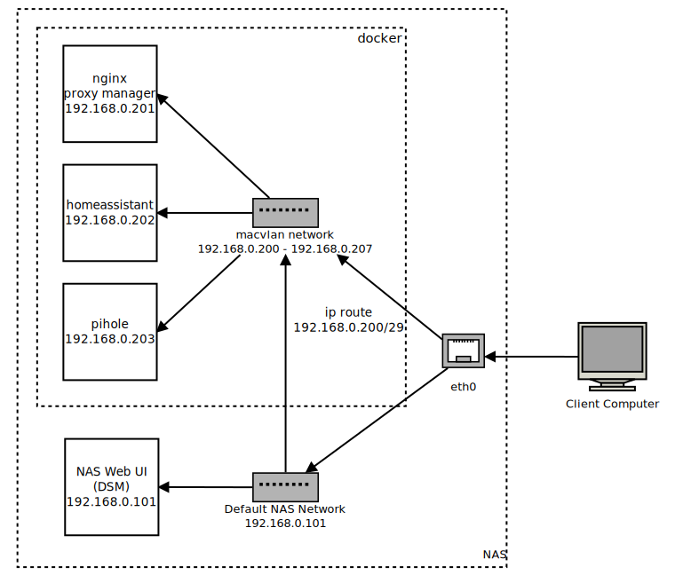

I use homeassistant to control my apartment’s lighting and some other fun things like the tea kettle. I definitely recommend it; it’s open-source and very easy to set up, and it supports many devices right away with minimal fuss. I’ll go into more detail on my home automation devices in another post. This one is about the software, and the surprising complexity of home networks.
Many people run homeassistant on a Raspberry Pi, but I already had a Synology DS218+ NAS (network-attached storage) device that I wanted to use for home automation, too. It’s a suprisingly capable little Linux server, and since it’s always running anyway for network backups, it’s a good candidate for a home automation server.
In this blog post I want to explain some of the challenges of setting up a cluster of applications on the NAS and how I eventually decided to do it.
Docker for personal projects
The NAS is a computer like any other, so one option for setting up additional apps on it is to install them normally and let them control the NAS’s available ports to talk to the local network. However, installing applications one-by-one like you might on a personal computer has a few downsides:
- The applications might not be compatible with Synology’s specific Linux distribution, “DSM” (I’m not even sure what distro it’s based on).
- Synology updates could inadvertently wipe out or break third-party apps I’ve installed, particularly if I need to reconfigure a preinstalled app like nginx.
- I will definitely forget how I installed the apps, and when I get a new NAS I will have to start from scratch to set thigs up again.
Instead of installing the apps individually, I committed to using Docker to run each app in its own container. Docker is useful in a professional software environment for isolating applications from their host operating system and managing their dependencies, but it’s also amazing for personal projects, because it allows the developer to completely describe how an application should be configured so that the setup is reproducible later. It’s very easy to forget how a personal project works, so I really value the self-documenting nature of docker containers.
Default ports on Synology NAS
Okay, there’s a catch—surely you knew there would be!
The Synology NAS runs its own web server, listening on ports 80 and 443 (the defaults for HTTP and HTTPS). While it is possible to free those two ports, doing so involves editing the default nginx configuration files for the NAS to move its web applications to other default ports, and those changes might not persist across OS updates. Furthermore, changes to the default ports make the NAS more annoying to use for its original purpose, and might break features that the Synology developers add later on.
I wanted to preserve the original functionality of the NAS, so I opted not to mess with the default ports. I assumed there must be a better way, and this blog post documents some of them.
Running homeassistant in host networking mode
I started by running homeassistant in its own Docker container in host networking mode, listening on its default port of 8123. In host networking mode, the Docker container attaches directly to the network interface of the host computer, so it behaves like the application is running on the host for the purposes of networking.
In this configuration, Docker provides isolation from the host operating system and keeps other ports on the container closed to traffic, and we still get the dependency management and reproducible setup of Docker containers, but we aren’t taking advantage of any virtual networking features.
My NAS is on the local network at nas.ivy.travisgeis.com, so I could see the homeassistant web interface at nas.ivy.travisgeis.com:8123. The NAS doesn’t use port 8123 for anything else, so it was available for homeassistant to use. Setting up this way was very quick, but I’m picky and I don’t like typing port 8123 every time I visit the homeassistant UI! I want to be able instead to use a different URL, like homeassistant.example.com to access the UI without specifying a port, which means the application needs to be available on the default port 80.
nginx as reverse proxy
With homeassistant running and the goal of making it available on its own URL, the next step is to add a reverse proxy to route traffic at this new URL to the actual port 8123. A reverse proxy intercepts traffic on the host machine and can route it to different applications based on properties of the traffic like the URL, the port, or the protocol.
I am familiar with nginx, a popular web server, so I decided to use it as a reverse proxy, but there are other options with the same features. Here is a diagram of nginx running as a reverse proxy on the NAS, directing traffic to our homeassistant URL to the homeassistant port, 8123:

This diagram shows how other services could use additional ports on the host, but I only configured homeassistant to run this way.
Here is the nginx config I used to set it up.
This nginx configuration declares one server listening on port 80, passing all traffic to http://localhost:$target_port. The target port comes from the mapping declared above, based on the name of the service. For the case of homeassistant, homeassistant.nas.ivy.travisgeis.com will provide a $name of “homeassistant,” which will map to port 8123.
This nginx reverse proxy works well for simple services like homeassistant that run on the host’s network and need to expose one or a handful of ports. However, it doesn’t work for services that need to listen to non-http network traffic, like a DNS server. My next project was to set up pihole, a DNS server and ad blocker, so I was back on the hunt for a way to have multiple apps running on the NAS seamlessly.
One caveat for running nginx this way on the NAS: Synology provides its own default nginx configuration, and nginx runs on the NAS to host the buit-in web interfaces. In order for this copy of nginx to bind to port 80, I had to stop the already-running default instance. Here is a good guide on managing built-in services with Synology’s package system, “synopackagectl”.
Aside: Running nginx in a container
Because the NAS already had a global nginx configuration for serving its own web interface, I wanted to run a separate copy of nginx in a container. Running my copy in a container keeps my configuration isolated from the global configs, and provides the usual ease of building that containers allow.
While I was researching running nginx in a container, I happened across Nginx Proxy Manager. It provides a graphical interface for configuring reverse-proxy settings for different services, further reducing the risk of completely forgetting how everything works.
Adding pihole
Next I wanted to set up pihole for LAN-wide ad blocking. pihole is a bit different from homeassistant, because it requires access to DNS queries, which don’t (usually) happen over HTTP.
Running pihole poses a few challenges:
- It needs access to non-HTTP ports.
- It also wants to run a server on port 80 for its web UI.
- It needs to have its own IP address, so the LAN router can point to it as the DNS server.
Pihole expects to run on the LAN at a static IP on a dedicated host. To get it running in Docker, I needed to emulate a separate host within the Synology NAS.
Multiple virtual hosts with Docker macvlan
Docker has a networking driver called macvlan that allows each container to have its own (virtualized) MAC address and IP address on the LAN. Perfect for the pihole! Thanks to Tony Lawrence for his excellent guide on setting up macvlan, which I adapted for this setup.
Using macvlan results in a pretty different network topology than using the host-mode network recommended for homeassistant. Each container on the macvlan network gets a unique IP address and MAC address on the LAN, and the macvlan network is isolated from the host. Basically you get extra virtual hosts from one computer!
Here are the basic steps required to transition the containers to a macvlan network:
- Decide on a range of IP addresses for the Docker containers
- Create the macvlan network in Docker and allocate the reserved IP addresses to it.
- Attach the containers to the new macvlan network.
Here’s a diagram of the macvlan network topology:

Each container gets its own MAC address and IP address, and each containerized application thinks it’s on its own host computer. We know the container IP addresses won’t collide with the DHCP-assigned network addresses because we’ve allocated different ranges for them. Below, I will detail each step for this setup.
Choose Docker IP addresses
First, decide on a subset of IP addresses to reserve for Docker. My DHCP server allocates 192.168.0.100-192.169.0.199, so I reserved 192.168.0.200-192.168.0.207 (192.168.0.200/29 in CIDR notation) for Docker containers. Each container will specify its own port in this range, so I can route to each through the nginx reverse proxy.
Create the macvlan network in Docker
I manage all the Docker containers with Docker compose, but they need to share a single macvlan network so they can communicate with each other. There is no easy way to create a shared network in Docker Compose, so I create one with the Docker CLI:
1 | sudo docker network create -d macvlan \ |
This command creates a macvlan network called vlan and allows it to allocate IP addresses 192.168.0.200-192.168.0.207. The parent interface is eth0, the Ethernet interface of the NAS.
Reserve Docker IPs and route to them
The containers on the macvlan network are isolated from the host by default. Add a routing rule to route the Docker subset to the macvlan network so the host can see the containers:
1 | sudo ip link add macvlan link eth0 type macvlan mode bridge |
These commands add a link network called “macvlan” to the NAS network configuration. This part was really hard to get right, because it’s right at the edge of my understanding of Linux networking. The second line attaches the new link to a range of IP addresses starting at 192.168.0.101, the third line starts it up, and the fourth line routes packets addresses to IP addresses 192.168.0.200-192.168.0.207 to the new link, which means they will end up available to the Docker containers.
Attach the containers to the network in docker-compose files
Finally, now that we have the “vlan” network, we need to specify that each container should attach to it. Add this “networks” config to docker-compose.yml:
1 | networks: |
GitHub repo
Check out the project on GitHub for the full configuration.